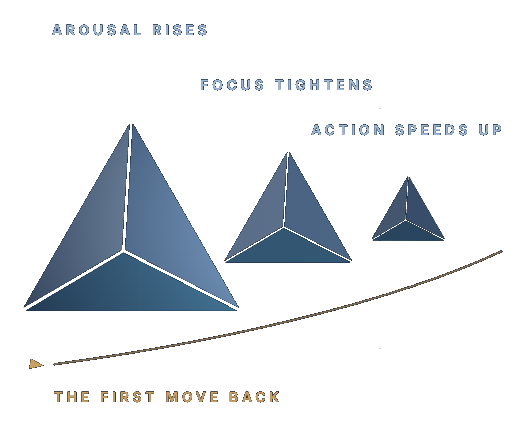

The architectureunder the work.
Three competencies. One integrated human system. Centre → Clarify → Choose. Each step is neurologically upstream of the next — skip Centre and Clarify becomes anxious; skip Clarify and Choose becomes reactive. The order matches how the regulatory system actually works. The sequence holds the work.

Start with your situation.
I need support for myself
Begin with a short, confidential intake — we match you to the right pathway, in person or by telehealth.
Start an intake →I support clients or patients
Make a referral, or explore facilitator and clinical resources that bring the framework into your practice.
Refer or enquire →I'm enquiring for a team or organisation
Programmes, toolkits, and consulting that build capacity across a team — scoped to your context.
Talk to us →One architecture. Nine contexts.
The same C³ architecture, applied where the pressure lives — choose the arm that matches your world.
In sequence.
Each move makes the next one possible. Open each to see what it does — and why the order matters.
01Centre — steady the system
Settle the body so the mind can think clearly. The steadier the system, the better everything downstream works — this is where good judgement begins.
Emotional intelligence · Perry · Goleman · Linehan
Tools: S.H.I.F.T.™ · The Capacity Check
02Clarify — see it as it is
With the system steady, judgement comes back online: you can separate fact from story and read the situation as it actually is.
Executive functioning · Barkley · Beck · Ericsson
Tools: The C³ Loop™ · The Decision Map
03Choose — act deliberately
One clear step, aligned to how you want to operate. Then return to Centre — the loop repeats, and each pass makes the next one easier.
Self-determination · Deci & Ryan · Dweck · McGonigal
Tools: The C³ Values™ Deck · Agency Map
Five interacting processes.
Across every EF arm, the focus is not simply on what is going wrong, but on the interaction between:
How we act
How we plan, initiate, regulate, shift, prioritise, and follow through.
How we respond
How we respond to internal states, stress, conflict, and emotional demands.
Why we engage
What drives engagement, persistence, autonomy, and meaningful action.
Where we function
How relationships, environments, systems, and expectations shape functioning.
Who we understand ourselves to be
How self-understanding shapes behaviour, confidence, values, and change.
The aim is not simply better performance. It is better functioning, greater agency, and sustainable performance within the realities of a person's life.
A state you can recognise.
Under sustained load every system narrows in the same recognisable way. It's normal, it's predictable, and naming it is the first step back.

01Instability
The body asks for steadiness first — a signal to Centre, not a failing.
02Confusion
Thinking pulls to the immediate. Clarify brings the wider view back.
03Powerlessness
Options feel smaller than they are. Choose restores the one deliberate move — and the loop carries on from there.
Check. Learn. Reset. Begin.
Choose a structured assessment, practical resources, a real-time regulation tool, or support matched to your needs.
The Capacity Check™
Identify which area of functioning is currently under the greatest strain.
Start the check→ 02LearnTools and resources
Use evidence-informed guides and worksheets to understand patterns and apply practical strategies.
Browse the tools→ 03ResetS.H.I.F.T.™
Reduce arousal, restore attention, and interrupt reactive behaviour when pressure rises.
Use S.H.I.F.T.™→ 04BeginStart an intake
Tell us what you need so we can identify the most appropriate pathway for support.
Start your intake→